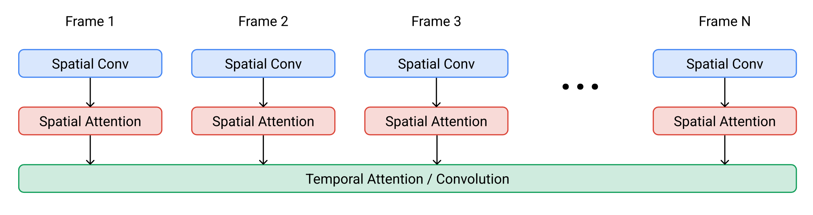
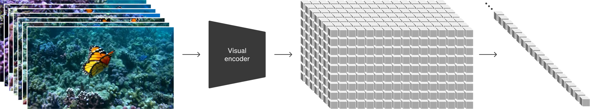
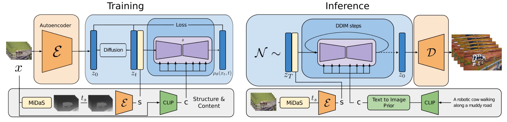
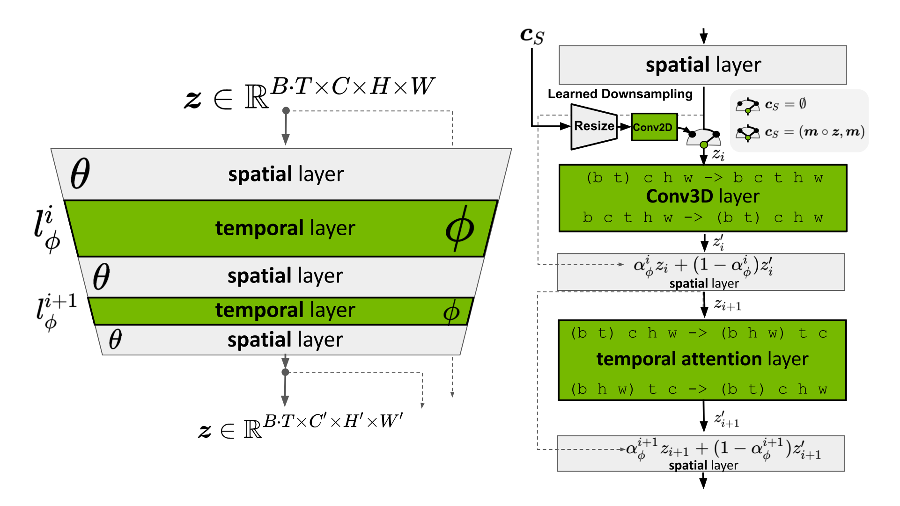
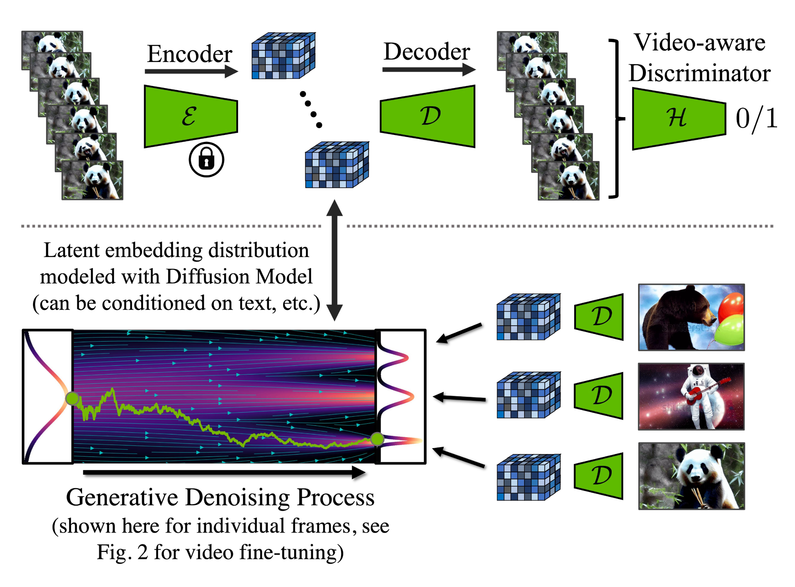
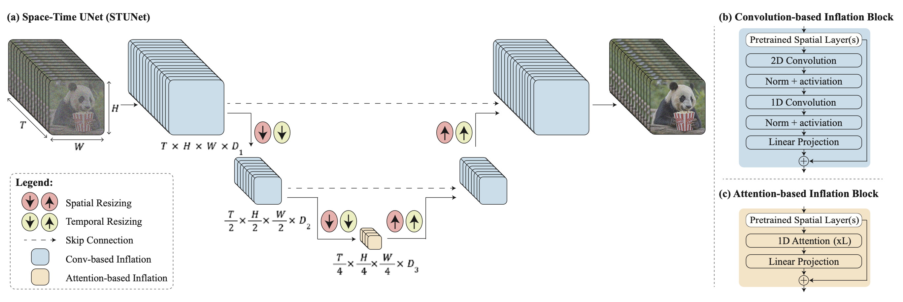

Diffusion models have demonstrated strong results on image synthesis in past years. Now the research community has started working on a harder task—using it for video generation. The task itself is a superset of the image case, since an image is a video of 1 frame, and it is much more challenging because:
- It has extra requirements on temporal consistency across frames in time, which naturally demands more world knowledge to be encoded into the model.
- In comparison to text or images, it is more difficult to collect large amounts of high-quality, high-dimensional video data, let along text-video pairs.
🥑 Required Pre-read: Please make sure you have read the previous blog on “What are Diffusion Models?” for image generation before continue here.
Video Generation Modeling from Scratch
First let’s review approaches for designing and training diffusion video models from scratch, meaning that we do not rely on pre-trained image generators.
Parameterization & Sampling Basics
Here we use a slightly different variable definition from the previous post, but the math stays the same. Let $\mathbf{x} \sim q_\text{real}$ be a data point sampled from the real data distribution. Now we are adding Gaussian noise in small amount in time, creating a sequence of noisy variations of $\mathbf{x}$, denoted as $\{\mathbf{z}_t \mid t =1 \dots, T\}$, with increasing amount of noise as $t$ increases and the last $q(\mathbf{z}_T) \sim \mathcal{N}(\mathbf{0}, \mathbf{I})$. The noise-adding forward process is a Gaussian process. Let $\alpha_t, \sigma_t$ define a differentiable noise schedule of the Gaussian process:
To represent $q(\mathbf{z}_t \vert \mathbf{z}_s)$ for $0 \leq s < t \leq T$, we have:
Let the log signal-to-noise-ratio be $\lambda_t = \log[\alpha^2_t / \sigma^2_t]$, we can represent the DDIM (Song et al. 2020) update as:
There is a special $\mathbf{v}$-prediction ($\mathbf{v} = \alpha_t \boldsymbol{\epsilon} - \sigma_t \mathbf{x}$) parameterization, proposed by Salimans & Ho (2022). It has been shown to be helpful for avoiding color shift in video generation compared to $\boldsymbol{\epsilon}$-parameterization.
The $\mathbf{v}$-parameterization is derived with a trick in the angular coordinate. First, we define $\phi_t = \arctan(\sigma_t / \alpha_t)$ and thus we have $\alpha_\phi = \cos\phi, \sigma_t = \sin\phi, \mathbf{z}_\phi = \cos\phi \mathbf{x} + \sin\phi\boldsymbol{\epsilon}$. The velocity of $\mathbf{z}_\phi$ can be written as:
Then we can infer,
The DDIM update rule is updated accordingly,
The $\mathbf{v}$-parameterization for the model is to predict $\mathbf{v}_\phi = \cos\phi\boldsymbol{\epsilon} -\sin\phi\mathbf{x} = \alpha_t\boldsymbol{\epsilon} - \sigma_t\mathbf{x}$.
In the case of video generation, we need the diffusion model to run multiple steps of upsampling for extending video length or increasing the frame rate. This requires the capability of sampling a second video $\mathbf{x}^b$ conditioned on the first $\mathbf{x}^a$, $\mathbf{x}^b \sim p_\theta(\mathbf{x}^b \vert \mathbf{x}^a)$, where $\mathbf{x}^b$ might be an autoregressive extension of $\mathbf{x}^a$ or be the missing frames in-between for a video $\mathbf{x}^a$ at a low frame rate.
The sampling of $\mathbf{x}_b$ needs to condition on $\mathbf{x}_a$ besides its own corresponding noisy variable. Video Diffusion Models (VDM; Ho & Salimans, et al. 2022) proposed the reconstruction guidance method using an adjusted denoising model such that the sampling of $\mathbf{x}^b$ can be properly conditioned on $\mathbf{x}^a$:
where $\hat{\mathbf{x}}^a_\theta (\mathbf{z}_t), \hat{\mathbf{x}}^b_\theta (\mathbf{z}_t)$ are reconstructions of $\mathbf{x}^a, \mathbf{x}^b$ provided by the denoising model. And $w_r$ is a weighting factor and a large one $w_r >1$ is found to improve sample quality. Note that it is also possible to simultaneously condition on low resolution videos to extend samples to be at the high resolution using the same reconstruction guidance method.
Model Architecture: 3D U-Net & DiT
Similar to text-to-image diffusion models, U-net and Transformer are still two common architecture choices. There are a series of diffusion video modeling papers from Google based on the U-net architecture and a recent Sora model from OpenAI leveraged the Transformer architecture.
VDM (Ho & Salimans, et al. 2022) adopts the standard diffusion model setup but with an altered architecture suitable for video modeling. It extends the 2D U-net to work for 3D data (Cicek et al. 2016), where each feature map represents a 4D tensor of frames x height x width x channels. This 3D U-net is factorized over space and time, meaning that each layer only operates on the space or time dimension, but not both:
- Processing Space:
- Each old 2D convolution layer as in the 2D U-net is extended to be space-only 3D convolution; precisely, 3x3 convolutions become 1x3x3 convolutions.
- Each spatial attention block remains as attention over space, where the first axis (
frames) is treated as batch dimension.
- Processing Time:
- A temporal attention block is added after each spatial attention block. It performs attention over the first axis (
frames) and treats spatial axes as the batch dimension. The relative position embedding is used for tracking the order of frames. The temporal attention block is important for the model to capture good temporal coherence.
- A temporal attention block is added after each spatial attention block. It performs attention over the first axis (
Imagen Video (Ho, et al. 2022) is constructed on a cascade of diffusion models to enhance the video generation quality and upgrades to output 1280x768 videos at 24 fps. The Imagen Video architecture consists of the following components, counting 7 diffusion models in total.
- A frozen T5 text encoder to provide text embedding as the conditioning input.
- A base video diffusion model.
- A cascade of interleaved spatial and temporal super-resolution diffusion models, including 3 TSR (Temporal Super-Resolution) and 3 SSR (Spatial Super-Resolution) components.
The base denoising models performs spatial operations over all the frames with shared parameters simultaneously and then the temporal layer mixes activations across frames to better capture temporal coherence, which is found to work better than frame-autoregressive approaches.
Both SSR and TSR models condition on the upsampled inputs concatenated with noisy data $\mathbf{z}_t$ channel-wise. SSR upsamples by bilinear resizing, while TSR upsamples by repeating the frames or filling in blank frames.
Imagen Video also applies progressive distillation to speed up sampling and each distillation iteration can reduce the required sampling steps by half. Their experiments were able to distill all 7 video diffusion models down to just 8 sampling steps per model without any noticeable loss in perceptual quality.
To achieve better scaling efforts, Sora (Brooks et al. 2024) leverages DiT (Diffusion Transformer) architecture that operates on spacetime patches of video and image latent codes. Visual input is represented as a sequence of spacetime patches which act as Transformer input tokens.
(Image source: Brooks et al. 2024)
Adapting Image Models to Generate Videos
Another prominent approach for diffusion video modeling is to “inflate” a pre-trained image-to-text diffusion model by inserting temporal layers and then we can choose to only fine-tune new layers on video data, or avoid extra training at all. The prior knowledge of text-image pairs is inherited by the new model and thus it can help alleviate the requirement on text-video pair data.
Fine-tuning on Video Data
Make-A-Video (Singer et al. 2022) extends a pre-trained diffusion image model with a temporal dimension, consisting of three key components:
- A base text-to-image model trained on text-image pair data.
- Spatiotemporal convolution and attention layers to extend the network to cover temporal dimension.
- A frame interpolation network for high frame rate generation
(Image source: Singer et al. 2022)
The final video inference scheme can be formulated as:
where:
- $\mathbf{x}$ is the input text.
- $\hat{\mathbf{x}}$ is the BPE-encoded text.
- $\text{CLIP}_\text{text}(.)$ is the CLIP text encoder, $\mathbf{x}_e = \text{CLIP}_\text{text}(\mathbf{x})$.
- $P(.)$ is the prior, generating image embedding $\mathbf{y}_e$ given text embedding $\mathbf{x}_e$ and BPE encoded text $\hat{\mathbf{x}}$ : $\mathbf{y}_e = P(\mathbf{x}_e, \hat{\mathbf{x}})$. This part is trained on text-image pair data and not fine-tuned on video data.
- $D^t(.)$ is the spatiotemporal decoder that generates a series of 16 frames, where each frame is a low-resolution 64x64 RGB image $\hat{\mathbf{y}}_l$.
- $\uparrow_F(.)$ is the frame interpolation network, increasing the effective frame rate by interpolating between generated frames. This is a fine-tuned model for the task of predicting masked frames for video upsampling.
- $\text{SR}_h(.), \text{SR}^t_l(.)$ are the spatial and spatiotemporal super-resolution models, increasing the image resolution to 256x256 and 768x768, respectively.
- $\hat{\mathbf{y}}_t$ is the final generated video.
Spatiotemporal SR layers contain pseudo-3D convo layers and pseudo-3D attention layers:
- Pseudo-3D convo layer : Each spatial 2D convo layer (initialized from the pre-training image model) is followed by a temporal 1D layer (initialized as the identity function). Conceptually, the convo 2D layer first generates multiple frames and then frames are reshaped to be a video clip.
- Pseudo-3D attention layer: Following each (pre-trained) spatial attention layer, a temporal attention layer is stacked and used to approximate a full spatiotemporal attention layer.
(Image source: Singer et al. 2022)
They can be represented as:
where an input tensor $\mathbf{h} \in \mathbb{R}^{B\times C \times F \times H \times W}$ (corresponding to batch size, channels, frames, height and weight); and $\circ T$ swaps between temporal and spatial dimensions; $\text{flatten}(.)$ is a matrix operator to convert $\mathbf{h}$ to be $\mathbf{h}’ \in \mathbb{R}^{B \times C \times F \times HW}$ and $\text{flatten}^{-1}(.)$ reverses that process.
During training, different components of Make-A-Video pipeline are trained independently.
- Decoder $D^t$, prior $P$ and two super-resolution components $\text{SR}_h, \text{SR}^t_l$ are first trained on images alone, without paired text.
- Next the new temporal layers are added, initialized as identity function, and then fine-tuned on unlabeled video data.
Tune-A-Video (Wu et al. 2023) inflates a pre-trained image diffusion model to enable one-shot video tuning: Given a video containing $m$ frames, $\mathcal{V} = \{v_i \mid i = 1, \dots, m\}$, paired with a descriptive prompt $\tau$, the task is to generate a new video $\mathcal{V}^*$ based on a slightly edited & related text prompt $\tau^*$. For example, $\tau$ = "A man is skiing" can be extended to $\tau^*$="Spiderman is skiing on the beach". Tune-A-Video is meant to be used for object editing, background change, and style transfer.
Besides inflating the 2D convo layer, the U-Net architecture of Tune-A-Video incorporates the ST-Attention (spatiotemporal attention) block to capture temporal consistency by querying relevant positions in previous frames. Given latent features of frame $v_i$, previous frames $v_{i-1}$ and the first frame $v_1$ are projected to query $\mathbf{Q}$, key $\mathbf{K}$ and value $\mathbf{V}$, the ST-attention is defined as:
Gen-1 model (Esser et al. 2023) by Runway targets the task of editing a given video according to text inputs. It decomposes the consideration of structure and content of a video $p(\mathbf{x} \mid s, c)$ for generation conditioning. However, to do a clear decomposition of these two aspects is not easy.
- Content $c$ refers to appearance and semantics of the video, that is sampled from the text for conditional editing. CLIP embedding of the frame is a good representation of content, and stays largely orthogonal to structure traits.
- Structure $s$ depicts greometry and dynamics, including shapes, locations, temporal changes of objects, and $s$ is sampled from the input video. Depth estimation or other task-specific side information (e.g. human body pose or face landmarks for human video synthesis) can be used.
The architecture changes in Gen-1 are quite standard, i.e. adding 1D temporal convo layer after each 2D spatial convo layer in its residual blocks and adding 1D temporal attention block after each 2D spatial attention block in its attention blocks. During training, the structure variable $s$ is concatenated with the diffusion latent variable $\mathbf{z}$, where the content variable $c$ is provided in the cross-attention layer. At inference time, the clip embedding is converted via a prior to convert CLIP text embedding to be CLIP image embedding.
(Image source: Esser et al. 2023)
Video LDM (Blattmann et al. 2023) trains a LDM (Latent diffusion models) image generator first. Then the model is fine-tuned to produce videos with a temporal dimension added. The fine-tuning only applies to these newly added temporal layers on encoded image sequences. The temporal layers $\{l^i_\phi \mid i = \ 1, \dots, L\}$ in the Video LDM (See Fig. 10) are interleaved with existing spatial layers $l^i_\theta$ which stays frozen during fine-tuning. That’s being said, we only fine-tune the new parameters $\phi$ but not the pre-trained image backbone model parameters $\theta$. The pipeline of Video LDM first generates key frames at low fps and then processes through 2 steps of latent frame interpolations to increase fps.
The input sequence of length $T$ is interpreted as a batch of images (i.e. $B \cdot T$) for the base image model $\theta$ and then gets reshaped into video format for $l^i_\phi$ temporal layers. There is a skip connection leads to a combination of temporal layer output $\mathbf{z}’$ and the spatial output $\mathbf{z}$ via a learned merging parameter $\alpha$. There are two types of temporal mixing layers implemented in practice: (1) temporal attention and (2) residual blocks based on 3D convolutions.
However, there is a remaining issue with LDM’s pretrainined autoencoder which only sees images never videos. Naively using that for video generation can cause flickering artifacts without good temporal coherence. So Video LDM adds additional temporal layers into the decoder and fine-tuned on video data with a patch-wise temporal discriminator built from 3D convolutions, while the encoder remains unchanged so that we still can reuse the pretrained LDM. During temporal decoder fine-tuning, the frozen encoder processes each frame in the video independently, and enforce temporally coherent reconstructions across frames with a video-aware discriminator.
Similar to Video LDM, the architecture design of Stable Video Diffusion (SVD; Blattmann et al. 2023) is also based on LDM with temporal layers inserted after every spatial convolution and attention layer, but SVD fine-tunes the entire model. There are three stages for training video LDMs:
- Text-to-image pretraining is important and helps improve both quality and prompt following.
- Video pretraining is beneficial to be separated and should ideally occur on a larger scale, curated dataset.
- High-quality video finetuning works with a smaller, pre-captioned video of high visual fidelity.
SVD specially emphasizes the critical role of dataset curation in model performance. They applied a cut detection pipeline to get more cuts per video and then applied three different captioner models: (1) CoCa for mid-frame, (2) V-BLIP for a video caption, and (3) LLM based captioning based on previous two captions. Then they were able to continue to improve video datasets, by removing clips with less motion (filtered by low optical flow scores calculated at 2 fps), excessive text presence (apply optical character recognition to identify videos with lots of text), or generally low aesthetic value (annotate the first, middle, and last frames of each clip with CLIP embeddings and calculate aesthetics scores & text-image similarities). The experiments showed that a filtered, higher quality dataset leads to better model quality, even when this dataset is much smaller.
The key challenge of generating distant key frames first and then adding interpolation with temporal super-resolution is how to maintain high-quality temporal consistency. Lumiere (Bar-Tal et al. 2024) instead adopts a space-time U-Net (STUNet) architecture that generates the entire temporal duration of the video at once through a single pass, removing the dependency on TSR (temporal super-resolution) components. STUNet downsamples the video in both time and space dimensions and thus expensive computation happens in a compact time-space latent space.

STUNet inflates a pretrained text-to-image U-net to be able to downsample and upsample videos at both time and space dimensions. Convo-based blocks consist of pre-trained text-to-image layers, followed by a factorized space-time convolution. And attention-based blocks at the coarsest U-Net level contains the pre-trained text-to-image, followed by temporal attention. Further training only happens with the newly added layers.
Training-Free Adaptation
Somehow surprisingly, it is possible to adapt a pre-trained text-to-image model to output videos without any training 🤯.
If we naively sample a sequence of latent codes at random and then construct a video of decoded corresponding images, there is no guarantee in the consistency in objects and semantics in time. Text2Video-Zero (Khachatryan et al. 2023) enables zero-shot, training-free video generation by enhancing a pre-trained image diffusion model with two key mechanisms for temporal consistency:
- Sampling the sequence of latent codes with motion dynamics to keep the global scene and the background time consistent;
- Reprogramming frame-level self-attention using a new cross-frame attention of each frame on the first frame, to preserve the context, appearance, and identity of the foreground object.
The process of sampling a sequence of latent variables, $\mathbf{x}^1_T, \dots, \mathbf{x}^m_T$, with motion information is described as follows:
- Define a direction $\boldsymbol{\delta} = (\delta_x, \delta_y) \in \mathbb{R}^2$ for controlling the global scene and camera motion; by default, we set $\boldsymbol{\delta} = (1, 1)$. Also define a hyperparameter $\lambda > 0$ controlling the amount of global motion.
- First sample the latent code of the first frame at random, $\mathbf{x}^1_T \sim \mathcal{N}(0, I)$;
- Perform $\Delta t \geq 0$ DDIM backward update steps using the pre-trained image diffusion model, e.g. Stable Diffusion (SD) model in the paper, and obtain the corresponding latent code $\mathbf{x}^1_{T’}$ where $T’ = T - \Delta t$.
- For each frame in the latent code sequence, we apply corresponding motion translation with a warping operation defined by $\boldsymbol{\delta}^k = \lambda(k-1)\boldsymbol{\delta}$ to obtain $\tilde{\mathbf{x}}^k_{T’}$.
- Finally apply DDIM forward steps to all $\tilde{\mathbf{x}}^{2:m}_{T’}$ to obtain $\mathbf{x}^{2:m}_T$.
Besides, Text2Video-Zero replaces the self-attention layer in a pre-trained SD model with a new cross-frame attention mechanism with reference to the first frame. The motivation is to preserve the information about the foreground object’s appearance, shape, and identity throughout the generated video.
Optionally, the background mask can be used to further smoothen and improve background consistency. Let’s say, we obtain a corresponding foreground mask $\mathbf{M}_k$ for the $k$-th frame using some existing method, and background smoothing merges the actual and the warped latent code at the diffusion step $t$, w.r.t. the background matrix:
where $\mathbf{x}^k_t$ is the actual latent code and $\tilde{\mathbf{x}}^k_t$ is the warped latent code on the background; $\alpha$ is a hyperparameter and the papers set $\alpha=0.6$ in the experiments.
Text2video-zero can be combined with ControlNet where the ControlNet pretrained copy branch is applied per frame on each $\mathbf{x}^k_t$ for $k = 1, \dots, m$ in each diffusion time-step $t = T , \dots, 1$ and add the ControlNet branch outputs to the skip-connections of the main U-net.
ControlVideo (Zhang et al. 2023) aims to generate videos conditioned on text prompt $\tau$ and a motion sequence (e.g., depth or edge maps), $\mathbf{c} = \{c^i\}_{i=0}^{N-1}$. It is adapted from ControlNet with three new mechanisms added:
- Cross-frame attention: Adds fully cross-frame interaction in self-attention modules. It introduces interactions between all the frames, by mapping the latent frames at all the time steps into $\mathbf{Q}, \mathbf{K}, \mathbf{V}$ matrices, different from Text2Video-zero which only configures all the frames to attend to the first frame.
- Interleaved-frame smoother is a mechanism to employ frame interpolation on alternated frames to reduce the flickering effect. At each time step $t$, the smoother interpolates the even or odd frames to smooth their corresponding three-frame clips. Note that the number of frames decreases in time after smoothing steps.
- Hierarchical sampler utilizes a hierarchical sampler to enable long videos with time consistency under memory constraints. A long video is split into multiple short clips and each has a key frame selected. The model pre-generates these keyframes with full cross-frame attention for long-term coherency and each corresponding short clip is synthesized sequentially conditioned on the keyframes.
Citation
Cited as:
Weng, Lilian. (Apr 2024). Diffusion Models Video Generation. Lil’Log. https://lilianweng.github.io/posts/2024-04-12-diffusion-video/.
Or
@article{weng2024video,
title = "Diffusion Models Video Generation.",
author = "Weng, Lilian",
journal = "lilianweng.github.io",
year = "2024",
month = "Apr",
url = "https://lilianweng.github.io/posts/2024-04-12-diffusion-video/"
}
References
[1] Cicek et al. 2016. “3D U-Net: Learning Dense Volumetric Segmentation from Sparse Annotation.”
[2] Ho & Salimans, et al. “Video Diffusion Models.” 2022 | webpage
[3] Bar-Tal et al. 2024 “Lumiere: A Space-Time Diffusion Model for Video Generation.”
[4] Brooks et al. “Video generation models as world simulators.” OpenAI Blog, 2024.
[5] Zhang et al. 2023 “ControlVideo: Training-free Controllable Text-to-Video Generation.”
[6] Khachatryan et al. 2023 “Text2Video-Zero: Text-to-image diffusion models are zero-shot video generators.”
[7] Ho, et al. 2022 “Imagen Video: High Definition Video Generation with Diffusion Models.”
[8] Singer et al. “Make-A-Video: Text-to-Video Generation without Text-Video Data.” 2022.
[9] Wu et al. “Tune-A-Video: One-Shot Tuning of Image Diffusion Models for Text-to-Video Generation.” ICCV 2023.
[10] Blattmann et al. 2023 “Align your Latents: High-Resolution Video Synthesis with Latent Diffusion Models.”
[11] Blattmann et al. 2023 “Stable Video Diffusion: Scaling Latent Video Diffusion Models to Large Datasets.”
[12] Esser et al. 2023 “Structure and Content-Guided Video Synthesis with Diffusion Models.”
[13] Bar-Tal et al. 2024 “Lumiere: A Space-Time Diffusion Model for Video Generation.”